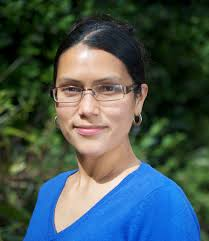

David Arnold
Professor David Arnold MA, PhD, FBCS, CEng, CITP is Director of Research Initiatives and Dean of the Brighton Doctoral College.
As head of Brighton’s Cultural Informatics Research Group his research interests lie in the area of technologies supporting the documentation,
analysis and use of digital cultural heritage data.
In parallel to these roles he has been the coordinator of two large EU projects since 2002, with a total contribution of over €16M.
The latest “Tools and Expertise for 3D Collection Formation” (www.3d-coform.eu) involves 19 partners and is due to complete in Nov 2012.
David holds an MA (1976, Engineering and Computer Science) and PhD (1978, Architecture) from the Centre for Land Use and Built Form Studies at Cambridge,
and was at UEA, Norwich, from 1978-2002, being elected Dean in 1986 and promoted to Professor in 1989. In 2002 he joined the University of Brighton
as Dean of the Faculty of Management and Information Sciences.
Professor Arnold is a Chartered Engineer, a Chartered Information Technology Professional, a member of the UK Computing Research Committee (UKCRC).
He is also a Fellow of the British Computer Society (FBCS) and the EUROGRAPHICS Association of which he is a past chairman.
He was the founding editor-in-chief of the ACM Journal on Computing and Cultural Heritage (JOCCH) and the AHRC Peer Review College.

Roberto Scopigno
Roberto Scopigno is a Research Director at ISTI-CNR, an Institute of the Italian National Research Council (CNR). He leads the Visual Computing Lab of ISTI-CNR.
He is currently engaged in research projects concerned with multiresolution data modeling and rendering, 3D scanning, surface reconstruction, scientific visualization and applications to Cultural
Heritage. Most of these activities have been funded by EU grants (EU IST projects).
He published more than one hundred twenty papers in international refereed journals/conferences and gave invited lectures or courses at several international conferences.
He was Co-Chair of international conferences (Eurographics 1999, Rendering Symposium 2002, WSCG 2004, Geometry Processing Symp. 2004, Eurographics 2008).
Since 2001 he is Co-Editor in Chief of the Computer Graphics Forum Journal. He has been elected member of the Eurographics Executive Committee on 2001, and appointed Vice Chair of the association in 2003.

Luiz Velho
Luiz Velho is a Full Researcher / Professor at IMPA - Instituto de Matematica Pura e Aplicada, and the leading scientist of VISGRAF
Laboratory. He received a BE in Industrial Design from ESDI / UERJ in 1979, a MS in Computer Graphics from the MIT / Media Lab in 1985, and
a Ph.D. in Computer Science in 1994 from the University of Toronto under the Graphics and Vision groups. His experience spans the fields
of modeling, rendering, imaging and animation. He has published extensively in conferences and journals of these areas. He is also
author of several books and has taught many courses on Visual Computing topics. He coordinated various research and development
projects related to 3D reconstruction.

Jorge Lopes
PhD em Design Products (Royal College of Art).
MSc em Engenharia de Producao (COPPE/UFRJ).
Bacharelado em Desenho Industrial pela Escola de Belas Artes da UFRJ.
Tecnologista do Instituto Nacional de Tecnologia - MCTI.
Pesquisador Conveniado do Departamento de Artes e Design da PUC-Rio.
Pesquisador Colaborador do Museu Nacional da UFRJ.


Marcus Granato
Graduado em Engenharia Metalúrgica e de Materiais (UFRJ, 1980), mestre e doutor em Engenharia Metalúrgica e de Materiais (COPPE/UFRJ, 2003), onde defendeu a tese Restauração de Instrumentos Científicos de Valor Histórico, Marcus Granato é pesquisador e coordenador da CMU desde 2004.
No MAST, também coordena projetos de pesquisa e de desenvolvimento tecnológico e organiza eventos nacionais e internacionais. Em 2012, coordenará o 31º Simpósio Internacional da Comissão de Instrumentos Científicos. Dedica-se também às atividades docentes, sendo professor do Curso de Pós-Graduação Lato Sensu em Preservação de Acervos de Ciência e Tecnologia (MAST) e dos cursos de mestrado e doutorado do Programa de Pós-Graduação em Museologia e Patrimônio (convênio UNIRIO/MAST), do qual é vice-coordenador.
A principal área de seu interesse é a museologia e patrimônio, cujas pesquisas se concentram nos seguintes temas: patrimônio científico, conservação de objetos metálicos e divulgação da ciência.

Karina Echavarria
Karina is a Senior Lecturer at the University of Brighton. She obtained her Computer Systems Engineering degree from the ITESM,
Mexico in 1999; her PhD at the University of Wolverhampton in the area of knowledge-based engineering in 2005 and an MA in Histories and
Cultures at the University of Brighton in 2008. Karina has worked in several European projects researching in the areas of digital collections
and 3D technologies for cultural heritage organisations producing research outputs in interdisciplinary areas such as computer graphics,
information and knowledge management as well as cultural heritage. She is currently the Principal Investigator on the national EPSRC project
“Automatic Semantic Analysis of 3D Content in Digital Repositories” (2014-2015). Her research interests include the documentation and visualisation
of heritage collections, information and knowledge management of 3D artefacts, semantic technologies, 3D printing, and the practical aspects
of deployment in the heritage sector. She serves in various international committees in these areas, and is currently Information Director for
the ACM Journal in Computing and Cultural Heritage.